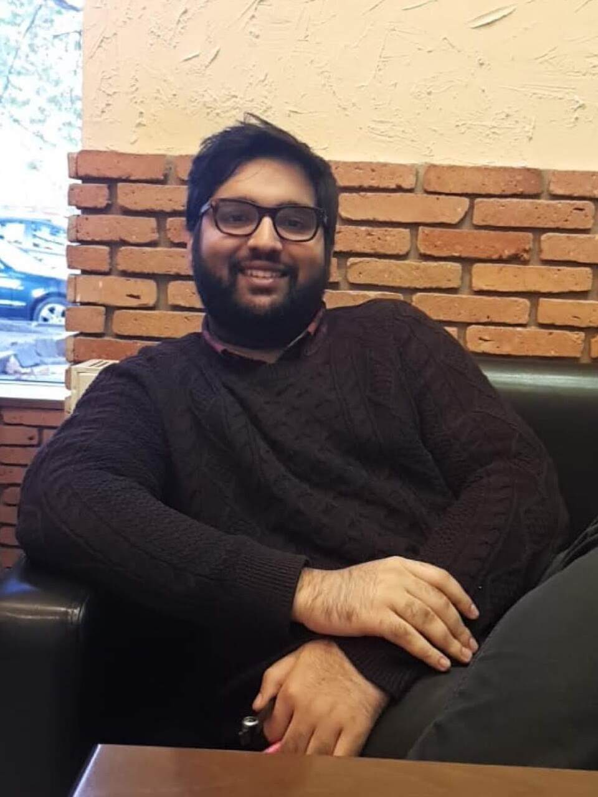
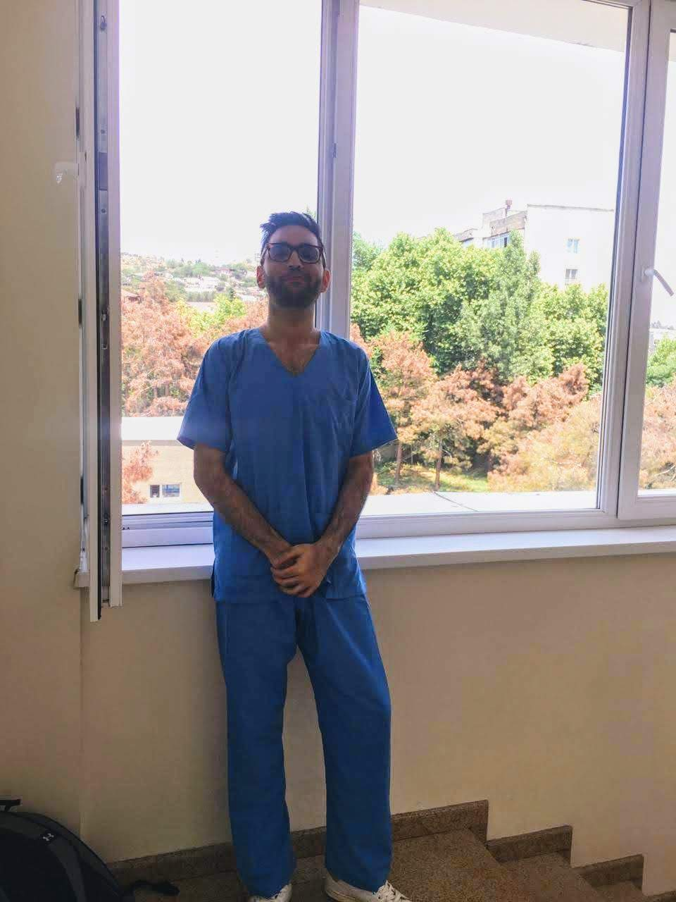
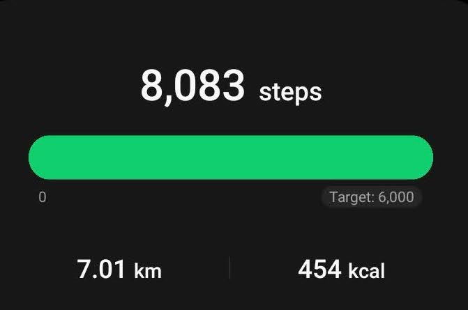
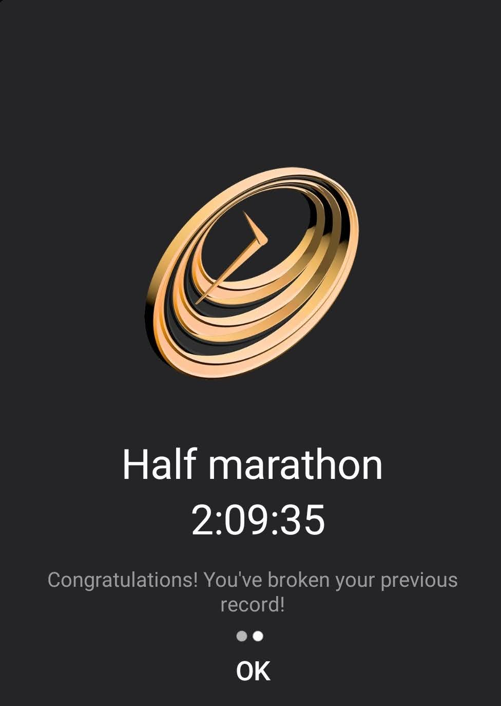
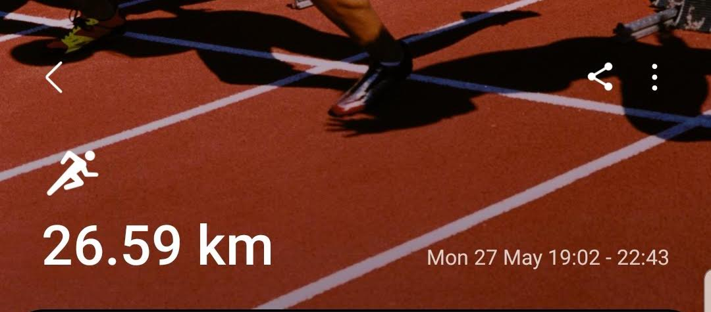
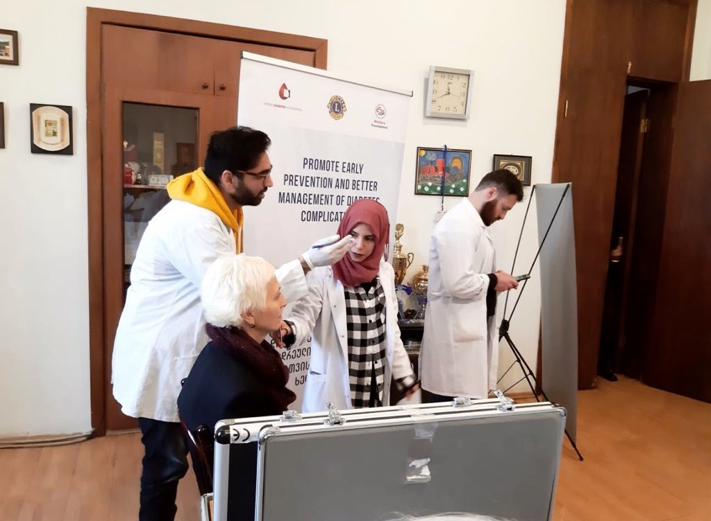
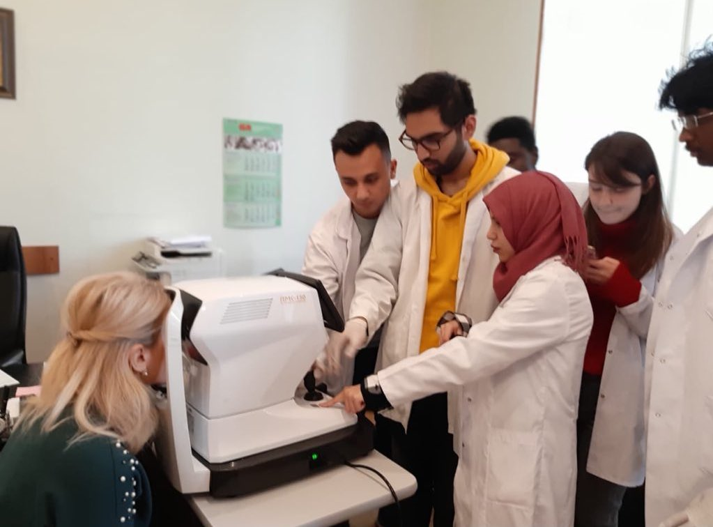
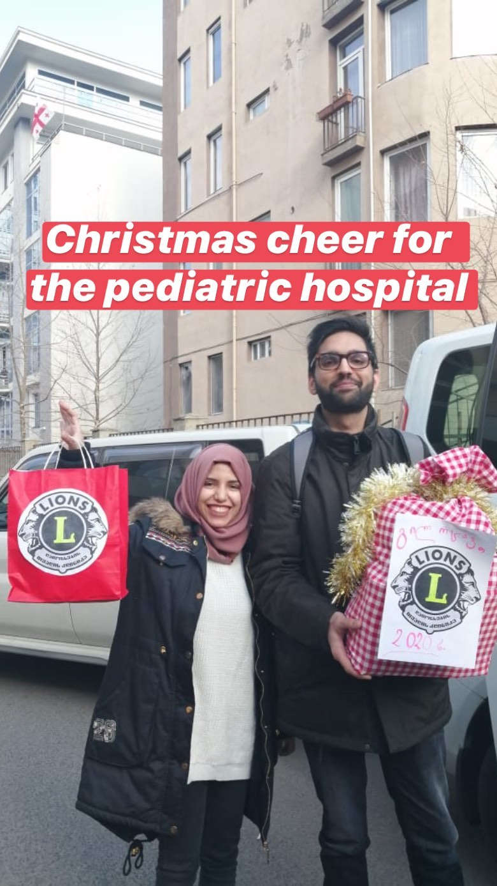
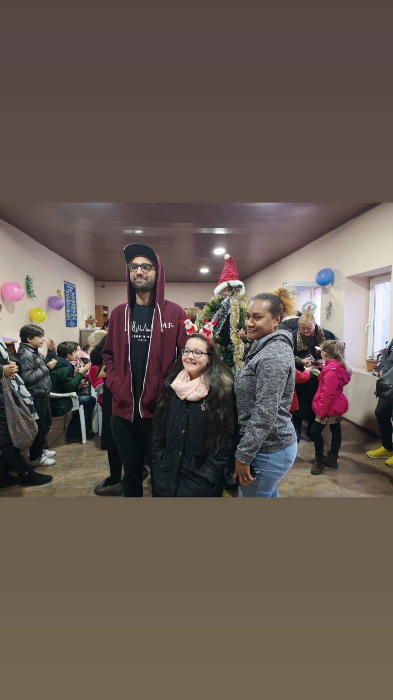

Me, November 2018

Me, May 2019

First Ever Run, Oct 27,2023

First Half Marathon, Apr 26,2024

Longest Run (yet), May 27,2024

Opthalmology Screening for Railway Workers (1)

Opthalmology Screening for Railway Workers (2)

Pediatric Hospital, Tbilisi, 2019

Local Orphanage, Tbilisi, Christmas 2019.